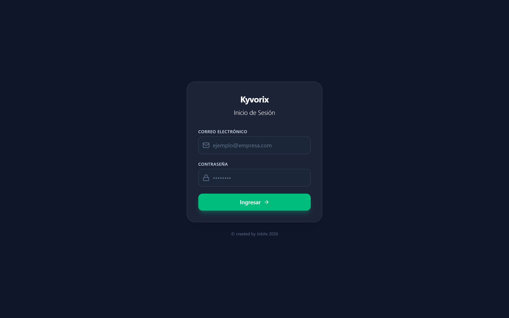
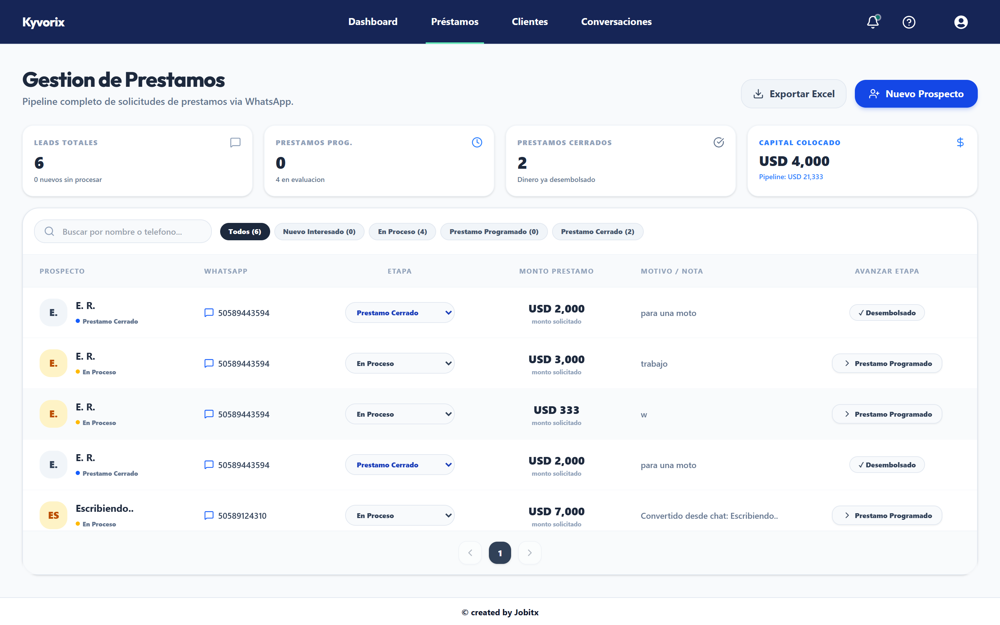
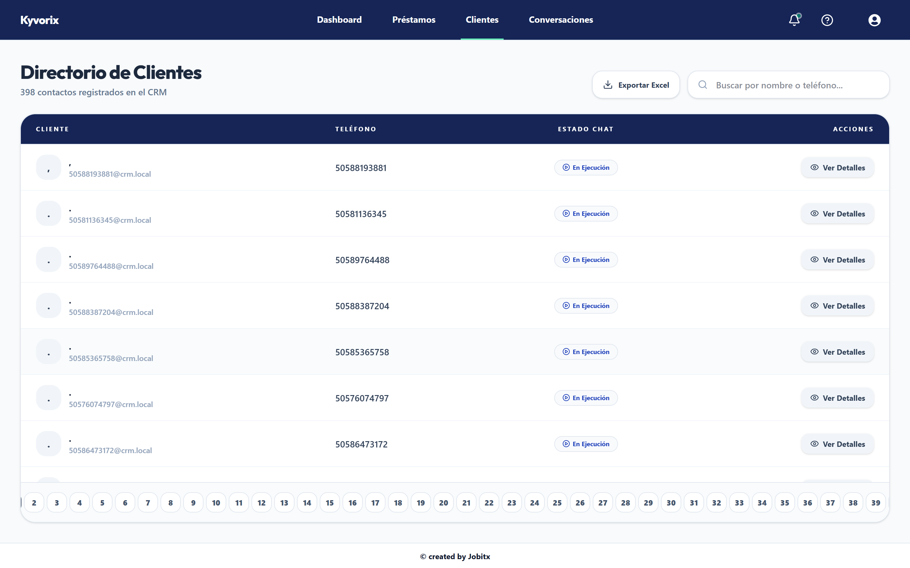
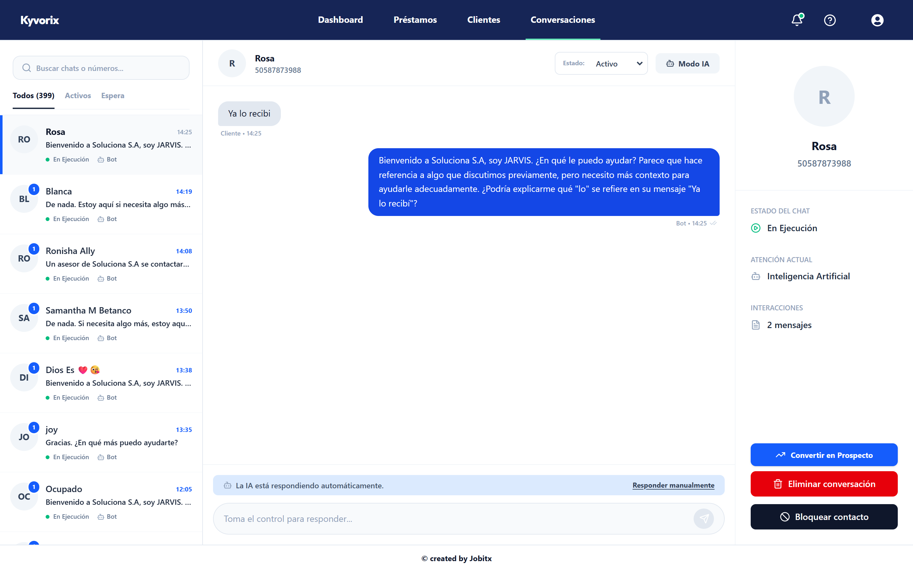

1. Cómo Iniciar Sesión en el CRM
Sigue estos sencillos pasos para entrar a tu cuenta de asesor comercial:

Escribe tu Correo y Clave
Escribe el correo electrónico corporativo que te entregó la empresa y tu contraseña personal en las dos casillas de la pantalla.
Presiona el Botón Verde
Haz clic en el botón verde Ingresar. El sistema te llevará directamente a tu panel de trabajo diario.
2. Menú: Dashboard (Tu Pantalla de Inicio)
Aquí verás un resumen del día: cuántos clientes están escribiendo y los mensajes más recientes.
Tarjetas de Métricas
En la parte superior puedes ver el total de conversaciones del día, cuántos prospectos de préstamo tienes activos y cuántos clientes están en atención.
Bandeja de Acción Rápida
A la derecha verás los últimos mensajes recibidos de WhatsApp. Si ves uno urgente, presiona el botón azul RESPONDER para abrir ese chat de inmediato.
3. Menú: Préstamos (Seguimiento de Solicitudes)
Haz clic en Préstamos en el menú superior para ver y actualizar las solicitudes de dinero de los clientes.

Cambiar de Etapa al Cliente
En la columna ETAPA puedes usar el menú desplegable para marcar si el cliente está Nuevo Interesado, En Proceso, o si el crédito ya fue Cerrado / Desembolsado.
Descargar Lista en Excel
Presiona el botón Exportar Excel arriba a la derecha si necesitas guardar la lista de solicitudes en tu computadora para compartirla con tu supervisor.
4. Menú: Clientes (Directorio y Búsqueda Rápida)
Haz clic en Clientes en el menú superior para consultar todos los contactos registrados en la empresa.

¿Cómo buscar a un cliente?
Usa la barra superior derecha "Buscar por nombre o teléfono...". Solo escribe su nombre o número y aparecerá de inmediato sin tener que buscar página por página.
Descargar Directorio en Excel
Al igual que en préstamos, el botón Exportar Excel descarga la lista completa de contactos con sus teléfonos organizados en columnas.
5. Menú: Conversaciones (Atención de WhatsApp)
Aquí es donde hablarás todos los días con los clientes que envían mensajes a la línea corporativa de WhatsApp.

🤖 ¿Cómo responder tú mismo cuando la Inteligencia Artificial está activa?
Cuando un cliente escribe, la IA intenta ayudarlo primero. Si tú quieres tomar el control de la conversación, haz clic en el botón azul que dice "Responder manualmente". La IA se silenciará y se desbloqueará la caja de texto para que escribas y envíes tus mensajes normalmente.
Convertir en Prospecto (Botón Azul)
Si el cliente te dice en el chat que necesita un préstamo, haz clic en el botón azul "Convertir en Prospecto" a la derecha. Escribe cuánto dinero necesita y automáticamente se creará su registro en la pestaña de Préstamos.
Eliminar Conversación (Botón Rojo)
Si te escribió un número equivocado y quieres borrarlo, haz clic en "Eliminar conversación". El sistema te pedirá que escribas el motivo (ej: "equivocado") para asegurarse de que no borres un cliente real por error.